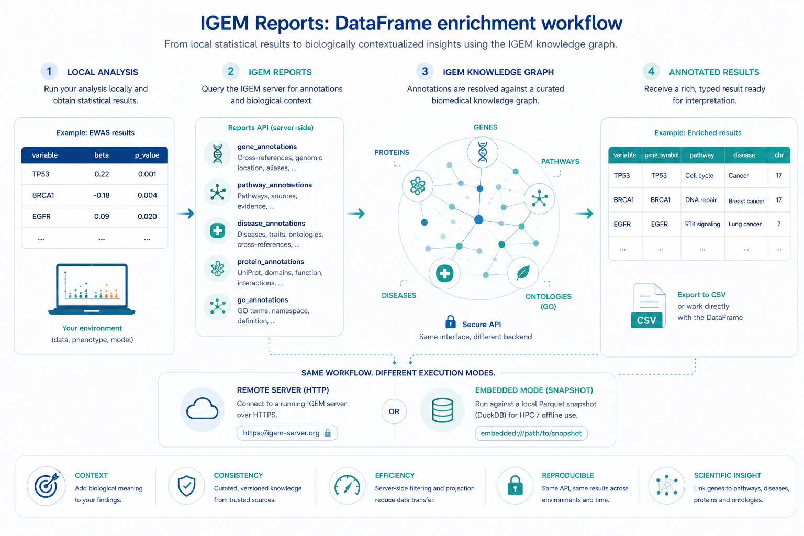

Reporting data¶
The reports module is the client’s gateway to the IGEM knowledge
graph — a curated catalog of genes, diseases, Gene Ontology
terms, pathways, and proteins, with the cross-references and
relationships that connect them. Where data / describe / modify
/ analyze operate locally on your Genotypes and Phenotypes,
reports operates remotely on the server: every call is an HTTP
round-trip that resolves identifiers against the catalog and
returns a typed result.
Tip
Everything on this page is server-side. The reports module
needs a reachable IGEM server — either over HTTP, or in
embedded mode against a Parquet snapshot for HPC / offline use.
See Installation for how the
two transport modes are configured.
Note
This module has CLI commands. igem report list and igem report run produce useful terminal artefacts (a registry table; a
CSV or printed DataFrame), so the CLI form is fully supported
alongside the Python API. A separate report
catalog page details every available report,
its inputs, output columns, and examples.


Local statistical results gain biological context through the IGEM reports API: the same Python API works against a remote HTTP server or against an embedded Parquet snapshot for HPC / offline use.¶
By the end of this page you will know how to:
Discover what reports are registered on the server with
list()andexplain().Run any report by name (generic
run) or via a typed helper (e.g.gene_annotations).Inspect a
ReportResult— DataFrame, server log, execution stats — and save it to CSV.Annotate a regression result with
gene_annotationscolumns viaRegressionResults.annotate(igem).Drive the same operations from the
igem reportCLI.
All operations are accessible from the IGEM facade. The reports
module is HTTP-only — there is no plain free-function form like
the local-only modules have, since every call needs the shared
client owned by the IGEM instance.
from igem import IGEM
with IGEM() as igem:
available = igem.report.list() # discovery
doc = igem.report.explain("gene_annotations") # markdown
result = igem.report.gene_annotations( # typed helper
input_values=["TP53", "BRCA1"],
)
result.df # pandas DataFrame
1. Discovering reports¶
The two lookup operations — list and explain — are read-only and
cheap. Use them to find out what is available before committing to a
run.
list — registry overview¶
with IGEM() as igem:
for r in igem.report.list():
print(f"{r.name:<25} v{r.version} {r.description}")
# gene_annotations v1.0.0 Master gene annotation table: cross-references, ...
# disease_annotations v1.0.0 Master disease annotation table: cross-references ...
# go_annotations v1.0.0 Master GO term annotation table: namespace, name, ...
# pathway_annotations v1.0.0 Master pathway annotation table: source ID, name, ...
# protein_annotations v1.0.0 Master protein annotation table: UniProt ...
Each entry is a ReportInfo pydantic model with name, version,
and description fields.
explain — full documentation for one report¶
with IGEM() as igem:
doc = igem.report.explain("gene_annotations")
print(doc[:300])
# # gene_annotations
#
# Master annotation report for human genes. Accepts a list of gene
# identifiers and returns one row per matched entity with consolidated
# cross-references, genomic coordinates, and relationship summary.
# ...
The returned string is server-side markdown — parameters, output columns, examples. The same content is reproduced in the report catalog, where the per-report sections are formatted for browsing.
2. Running a report¶
There are two equivalent ways to run a report; the only difference is how the parameters are typed.
Typed helpers (preferred)¶
Each registered report has a dedicated helper on the facade. You get named arguments, IDE auto-completion, and a one-line CSV write:
with IGEM() as igem:
# Genes
result = igem.report.gene_annotations(
input_values=["TP53", "BRCA1", "EGFR"], # or input_file=...
assembly="GRCh38.p14", # default
columns=[ # subset of available cols
"gene_symbol", "hgnc_id", "ensembl_id",
"chromosome", "start_position", "end_position",
],
output_path="genes.csv", # also writes CSV
)
# GO terms — namespace filter is exposed as a typed kwarg
result = igem.report.go_annotations(
input_values=["GO:0007049", "cell cycle"],
namespace="BP",
)
# Proteins — Pfam toggles are exposed as typed kwargs
result = igem.report.protein_annotations(
input_values=["P04637"],
include_pfam_details=True,
max_pfam_ids_per_type=5,
)
The full per-report signature — accepted parameters, output columns, notes — is in the report catalog.
Generic run (works for any report)¶
with IGEM() as igem:
result = igem.report.run(
"pathway_annotations",
params={"input_values": ["R-HSA-109581", "hsa04110"]},
columns=["pathway_id", "pathway_name", "source_db"],
)
params is a free-form dict whose accepted keys depend on the
report — see the report catalog or call
explain(name) for the per-report contract. columns is universal:
pass a subset to keep only those output columns (the server projects
on its side, so it is also a bandwidth optimisation).
Use the generic form when you need a kwarg that is not yet exposed
as a named parameter on the typed helper. The two forms are
otherwise equivalent — the typed helper is just a thin wrapper that
builds the same params dict for you.
Inputs from a file¶
Both forms accept a list of identifiers. For long lists — typically gene panels exported from another tool — read the list from a file with one identifier per line:
with IGEM() as igem:
result = igem.report.gene_annotations(
input_file="my_genes.txt",
)
Blank lines and #-prefixed comments are ignored. Whitespace is
trimmed. input_values and input_file can be combined; values
from both are concatenated before being sent to the server.
3. Working with ReportResult¶
Every run returns a ReportResult wrapping the DataFrame and the
server’s execution log:
result = igem.report.gene_annotations(input_values=["TP53"])
result.df # pandas.DataFrame, one row per matched identifier
result.message # multiline server-side execution log
result.elapsed_seconds # server-side wall time (float)
result.stats # dict, e.g. {'total_rows': 1, 'found': 1, 'not_found': 0}
result.report # ReportInfo (name / version / description)
The df is materialised eagerly from the response payload — there
is no lazy loading. If you only need a column subset, pass columns=
at call time so the server skips serialising the rest.
not_found rows¶
Reports that take an identifier list emit a row for every input,
including the ones with no match. Unmatched rows have
status = "not_found" and note set to a human-readable
explanation. This is deliberate: it keeps the result aligned with
your input list (no silent drops), and lets analyze.annotate join
on the original input column without losing rows.
result = igem.report.gene_annotations(input_values=["TP53", "NOPE"])
result.df["status"].value_counts()
# found 1
# not_found 1
result.stats
# {'total_rows': 2, 'found': 1, 'not_found': 1}
To suppress not_found rows, pass emit_not_found_rows=False in
params (supported by all annotation reports except
gene_annotations).
Saving to CSV¶
result.save_csv("output.csv") # parents auto-created
Or pass output_path= directly to a typed helper to combine run +
save in one call.
4. Integrating with analyze — annotation¶
The most common reason to run gene_annotations is to enrich an
EWAS / PheWAS / GWAS result. RegressionResults.annotate does the
join for you:
with IGEM() as igem:
res = (
igem.analyze.association_study(
phen, regressors=["BMI", "AGE", "GLUCOSE"], outcomes=["LDL"],
)
.with_correction(method="fdr")
.passing(threshold=0.05)
.annotate(igem) # ← server round-trip happens here
.top(20)
)
# Now `res.df` has gene_symbol / chromosome / start_position / ... columns
# joined on `variable` (the regressor name).
Keep in mind:
The default join column is
variable. Override withinput_col=...if your result frame uses a different name.The default annotation columns are a curated short list (
gene_symbol,hgnc_id,ensembl_id,chromosome,start_position,end_position). Passkeep_columns=...to customise.Rows whose
input_colvalue is not a recognized gene get NaN in the annotation columns — they are not dropped from the result.Filter (
with_correction/passing/top) beforeannotateto minimise the server round-trip.
annotate is currently gene_annotations-only. Equivalents for
disease / pathway / protein joining are on the roadmap.
5. The igem report CLI¶
The same operations are available from the terminal — useful for batch jobs, ad-hoc exploration, and HPC submission scripts. Each registered report is its own subcommand; report-specific kwargs become typed flags.
Discovery¶
$ igem report list
Name Version Description
------------------------------------------------------------
disease_annotations 1.0.0 Master disease annotation table: ...
gene_annotations 1.0.0 Master gene annotation table: ...
go_annotations 1.0.0 Master GO term annotation table: ...
pathway_annotations 1.0.0 Master pathway annotation table: ...
protein_annotations 1.0.0 Master protein annotation table: ...
$ igem report explain gene_annotations
# gene_annotations
...
Typed subcommands¶
# Genes — printed to stdout
igem report gene_annotations --input TP53 --input BRCA1 --input EGFR
# Inputs from a file, restricted columns, saved to CSV
igem report gene_annotations \
--input-file my_genes.txt \
--columns gene_symbol,hgnc_id,chromosome,start_position,end_position \
--output annotated.csv
# Diseases with a group filter
igem report disease_annotations --input "MONDO:0005301" --group-filter autoimmune
# GO terms restricted to Biological Process
igem report go_annotations --input "GO:0007049" --namespace BP
# Proteins with Pfam accession details
igem report protein_annotations --input P04637 --include-pfam-details
Each subcommand exposes the same --input / --input-file /
--columns / --output flags as the others, plus the kwargs
specific to that report. Run igem report <name> --help for the
full list.
Generic fallback¶
For reports that don’t yet have a typed subcommand on the client (typically because they are newly added on the server), there is a generic form:
igem report run --name <report_name> --input ... --columns ... --output ...
It accepts only the universal kwargs — --input, --input-file,
--columns, --output. Any report-specific kwargs are reachable
only via the typed subcommand or the Python API.
The CLI emits the server’s message log, elapsed, and stats
on stdout, then either prints the DataFrame (--output not given)
or notes the saved path. Pass --debug for verbose request /
response logging.
What’s next¶
Report catalog — one section per registered report: parameters, output columns, examples, gotchas.
Analyzing data —
RegressionResults.annotateis the natural downstream consumer ofgene_annotations.Cookbook — end-to-end recipes that mix local analysis with knowledge-graph annotation.